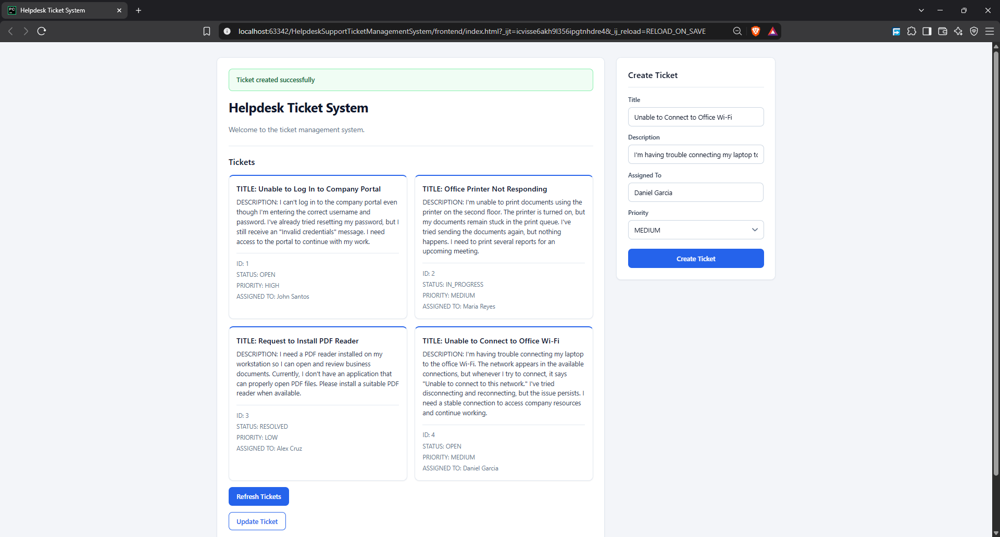
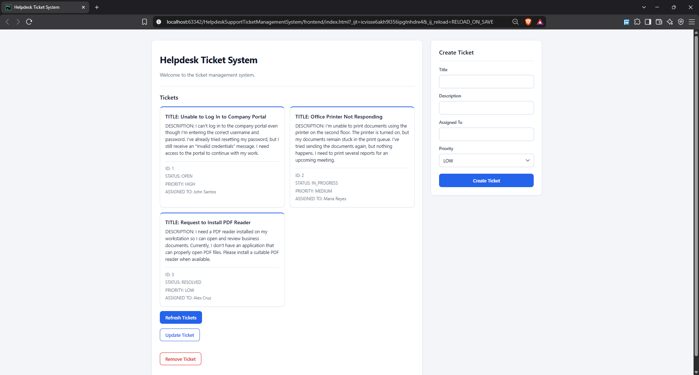
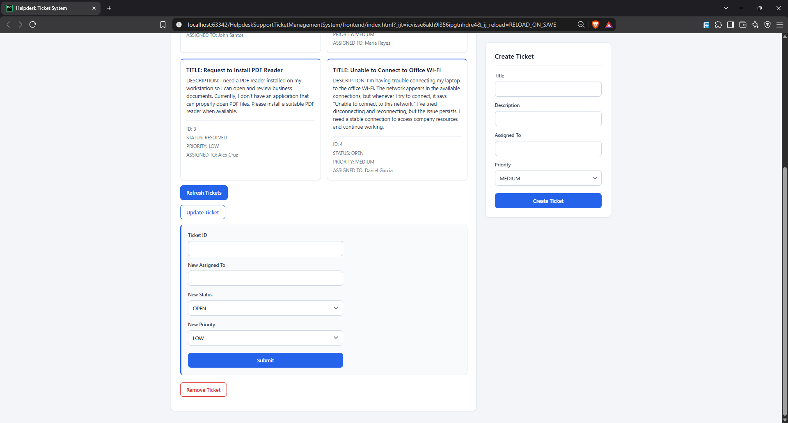

Machine Learning System for Oyster Mushroom Cultivation
Project Overview
The Helpdesk Support Ticket Management System is a full-stack web application designed to streamline the process of managing support requests. It provides a centralized system for creating, viewing, updating, and deleting support tickets, helping organize issues and making them easier to track and manage. The application was developed using Python and FastAPI for the backend, MySQL for persistent data storage, and HTML, CSS, and JavaScript for the frontend. It integrates a RESTful API with a web-based interface, demonstrating how frontend and backend components communicate to perform CRUD operations and manage application data. This project strengthened my understanding of REST API development, database integration, and full-stack application architecture while providing practical experience in building a functional software solution.
Objectives
- Develop a full-stack web application for managing helpdesk support tickets in a centralized system.
- Implement CRUD (Create, Read, Update, Delete) operations to support the ticket management lifecycle.
- Build RESTful API endpoints using FastAPI to handle requests and facilitate communication between the frontend and backend.
- Integrate a MySQL database to store and manage ticket data persistently.
- Develop an interactive web interface using HTML, CSS, and JavaScript to make ticket management accessible through a browser.
- Apply software development principles to build a functional, organized, and maintainable application.
Key Features
- Create Tickets: Create new support tickets to record issues and support requests.
- View Tickets: Retrieve and display ticket information through the application.
- Update Tickets: Modify existing ticket information when changes are needed.
- Delete Tickets: Remove tickets that are no longer needed.
- RESTful API Integration: Connect the frontend to backend endpoints for processing ticket management operations.
- Persistent Data Storage: Store ticket records in a MySQL database so data can be retained between application sessions.
- Interactive Web Interface: Provide a browser-based interface built with HTML, CSS, and JavaScript for interacting with the system.
Technology Stack
Backend
- Python: Core backend programming language.
- FastAPI: Framework for building RESTful API endpoints.
Frontend
- HTML5: Structures the web interface.
- CSS3: Handles styling and layout.
- JavaScript: Implements client-side interactions and frontend-to-backend communication.
Database
- MySQL: Relational database for persistent ticket storage.
Architecture and Integration
- REST API: Enables communication between the frontend and backend using HTTP requests.
- CRUD Operations: Provides the core functionality for managing ticket records.
Architecture Overview
The system follows a layered design that separates the user interface, application logic, and data storage.
1. Presentation Layer
The frontend is built using HTML, CSS, and JavaScript. It provides the user interface for interacting with support tickets and communicates with the backend through HTTP requests.
2. Application Layer
The backend is developed using Python and FastAPI. It exposes RESTful API endpoints that handle ticket creation, retrieval, updating, and deletion. This layer processes incoming requests and coordinates access to the stored ticket data.
3. Data Layer
MySQL serves as the persistent data storage layer. It stores ticket records and allows the application to retrieve or modify data as requested by the backend.
Request Flow
When a user performs a ticket management action, the frontend sends a request to the appropriate API endpoint. The backend processes the request and interacts with the database when necessary. The resulting response is then returned to the frontend, which updates the interface accordingly.


